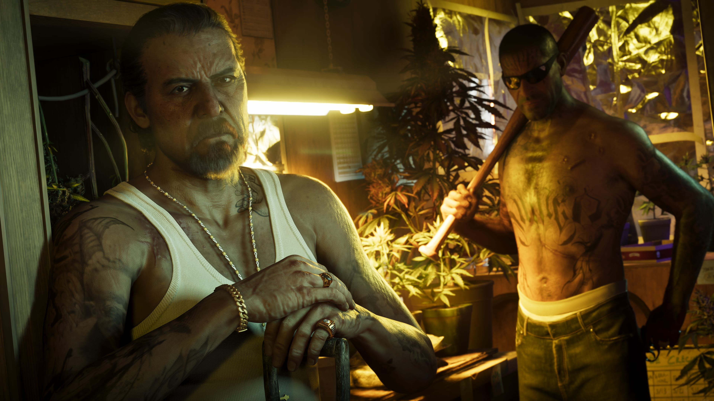
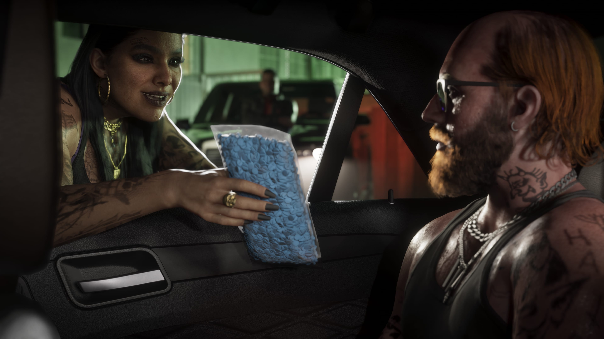
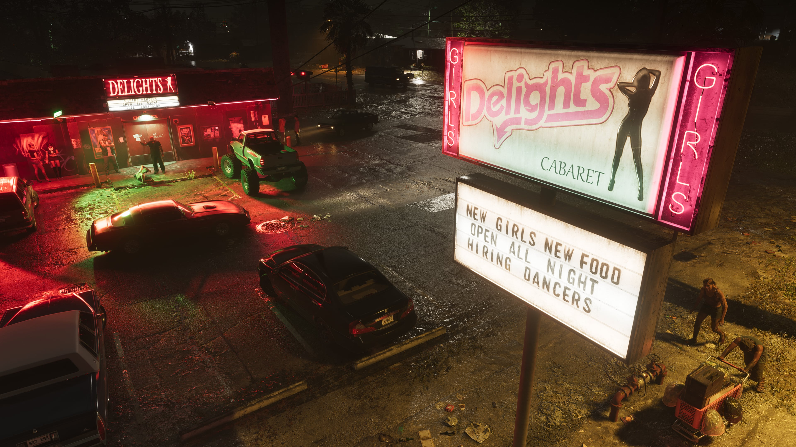

Port Gellhorn
Port Gellhorn é um dos destinos oficialmente apresentados de Grand Theft Auto VI e representa uma face muito diferente de Leonida. O antigo destino turístico perdeu o brilho do passado e hoje é marcado por motéis baratos, atrações abandonadas, centros comerciais esvaziados e uma nova economia crescendo entre os restos do turismo.

A costa esquecida de Leonida
A Rockstar apresenta Port Gellhorn como uma região costeira que já viveu dias melhores. O turismo que um dia movimentou o local perdeu força, deixando para trás motéis baratos, atrações fechadas e áreas comerciais que já não atraem os visitantes de antes.
O resultado é um cenário bastante diferente do glamour de Vice City: mais desgastado, mais barato e com uma identidade construída sobre aquilo que permaneceu depois que os turistas foram embora.

CONFIRMADO: a Rockstar descreve Port Gellhorn como a costa esquecida de Leonida e um antigo destino turístico que atualmente vive uma realidade bastante diferente.

Uma nova economia depois do turismo
Embora os antigos atrativos não tenham conseguido trazer os turistas de volta, Port Gellhorn não ficou completamente parada.
A descrição oficial da Rockstar apresenta uma nova economia surgindo nesse antigo destino de férias, associada a bebidas baratas, analgésicos e à cultura de postos de estrada.
É uma caracterização que deixa claro que Port Gellhorn terá uma personalidade mais áspera e decadente do que outras regiões de Leonida.
Histórias nas margens do estado
As imagens oficiais de Port Gellhorn mostram pessoas, veículos e encontros em ambientes que reforçam a identidade de uma região afastada do brilho das grandes avenidas.
Ainda não sabemos exatamente quais personagens, missões ou acontecimentos estarão ligados a cada local mostrado.
Depois do lançamento, esta página poderá catalogar cada encontro, estabelecimento e ponto de interesse encontrado pela região.


A outra noite de Leonida
A vida noturna de Port Gellhorn não apresenta o mesmo glamour associado a Vice City.
Os materiais oficiais mostram estabelecimentos, luzes de neon, veículos e situações que combinam com o perfil mais desgastado e imprevisível definido para a região.
No futuro poderemos identificar com precisão bares, clubes, lojas e outros estabelecimentos que possam ser visitados pelo jogador.
Uma população com identidade própria
Port Gellhorn não é apresentada apenas através de prédios abandonados. As imagens oficiais também mostram moradores, encontros e situações que dão personalidade à região.
Esses elementos ajudam a construir um contraste importante dentro de Leonida, mostrando que cada região terá sua própria população, estética e ambiente social.


Muito além dos motéis e estradas
Port Gellhorn também possui uma presença visual própria dentro do estado, combinando áreas construídas, litoral e espaços mais abertos.
Ainda não existe um mapa oficial completo que permita estabelecer com precisão os limites da região.
Por isso, o GTA6Zoone evitará publicar mapas comunitários ou localizações estimadas como se fossem informações confirmadas.
O que define Port Gellhorn
Antigo destino de férias
Port Gellhorn já foi um local turístico popular, mas hoje vive outra realidade.
Turismo abandonado
Motéis baratos, atrações fechadas e centros comerciais esvaziados fazem parte da descrição oficial da região.
Uma nova economia
O declínio do turismo abriu espaço para uma realidade econômica muito diferente daquela que existia no passado.
Tudo sobre a região
Port Gellhorn será expandida no GTA6Zoone conforme tivermos novas informações oficiais e, principalmente, depois do lançamento de GTA VI.
Locais e estabelecimentos
Motéis, lojas, bares e pontos de interesse.
Missões
Missões e acontecimentos ligados à região.
Atividades
Atividades disponíveis em Port Gellhorn.
Veículos
Carros, motos e outros veículos encontrados.
Propriedades
Casas, motéis, negócios e propriedades.
Colecionáveis
Itens escondidos pela região.
Segredos
Locais escondidos e descobertas verificadas.
Easter Eggs
Referências e curiosidades encontradas no local.
Imagens de Port Gellhorn
Imagens oficiais divulgadas pela Rockstar Games para a região.
Port Gellhorn no mapa de GTA VI
O mapa interativo do GTA6Zoone futuramente poderá conectar motéis, estabelecimentos, missões, atividades, colecionáveis e outros pontos de interesse encontrados em Port Gellhorn.
Enquanto a Rockstar não divulgar informações suficientes sobre a localização exata de cada ponto, somente dados verificáveis serão tratados como confirmados.
Explorar o mapa →
O que está confirmado
É uma das regiões oficialmente apresentadas pela Rockstar Games para Leonida.
A Rockstar afirma que Port Gellhorn já foi um destino popular de férias.
Motéis baratos, atrações fechadas e áreas comerciais vazias fazem parte da descrição oficial da região.
A região desenvolveu uma nova realidade econômica depois do declínio do turismo.
Rockstar Games
As informações desta página utilizam materiais oficiais publicados pela Rockstar Games.
Site oficial de Grand Theft Auto VI
Rockstar Games — Port Gellhorn


TRANSPARÊNCIA EDITORIAL: o GTA6Zoone não utiliza vazamentos ou mapas comunitários como confirmação oficial. Nomes de estabelecimentos, bairros, missões, atividades ou outros detalhes serão adicionados quando puderem ser confirmados por materiais oficiais ou diretamente no jogo.